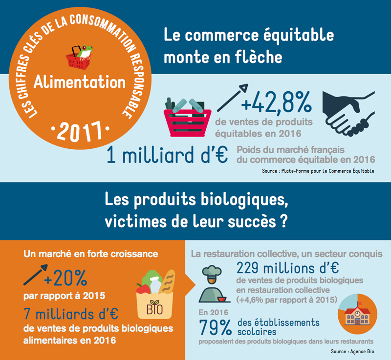

C'est un style de consommation qui se base sur les critères du développement durable:
La consommation responsable commence à devenir à la mode pour les Français qui s’y mettent de plus en plus, et ce n’est pas un mal. En effet, depuis 1960, les Français consomment plus chaque année, c’est notamment dû à l’explosion de la conception des voitures. On parle parfois d'une consommation durable.
La consommation responsable ne se limite pas seulement à ça, elle engage aussi la responsabilité du consommateur. Avoir une consommation responsable signifie donc:
Ainsi il est par exemple plus responsable d’acheter des produits réparables et sans obsolescence programmée.
